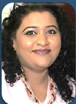

Abu Shagara, Sharjah, UAE
+971 50 108 6842
Sobiawilliam17@gmail.com
Nationality: Pakistan | MOE Approved
Results-driven educational leader with 18 years of experience across the UAE and Pakistan (American & British curricula). Proven track record in elevating academic standards, mentoring staff, and fostering high-performing school cultures.
Master's in Art Education
Adarsh Vishwa Vidyalaya (UAE)
Bachelor of Education (Hons)
Shah Abdul Latif Univ., Sindh, PK
Bachelor of Arts
Allama Iqbal Open Univ., PK
CACHE Level 7 Diploma Ongoing
Education Management & Leadership
CACHE Level 5 Diploma
Education and Training (UAE)
Intl. Diploma in SEN (L5)
OTHM Qualifications (UK)
2-Year Diploma Montessori
Intl. Montessori Training Inst. (UAE)
Al Wahda Private School, Sharjah, UAE | American Curriculum
Al Wahda Private School, Sharjah, UAE | Managed 250+ students
Al Wahda Private School & Al Kamal American PS, Sharjah, UAE
Taryam American Private School, Sharjah, UAE | Managed 1200 students
The City School (Kharian Campus), Punjab, PK | Managed 1000 students